Latest Newsroom.
For media & press inquiries, please email futuresfinancialsinc@gmail.com
-
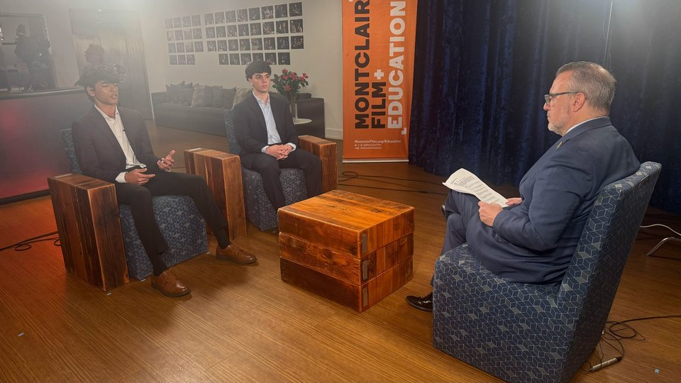
Futures Financials Returns to FOX 5 New York - Futures Financials Joins the Virtual North American Student Congress
- Building the Future Before 18: Financial Literacy, Leadership & AI
- Revolutionizing Financial Literacy with Tech & Policy
-
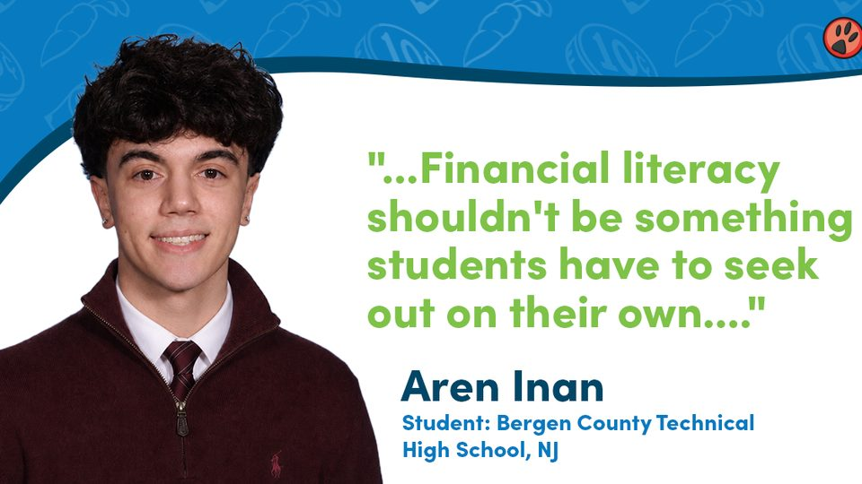
Counting Change, Creating Change: My Journey into Financial Literacy Advocacy -
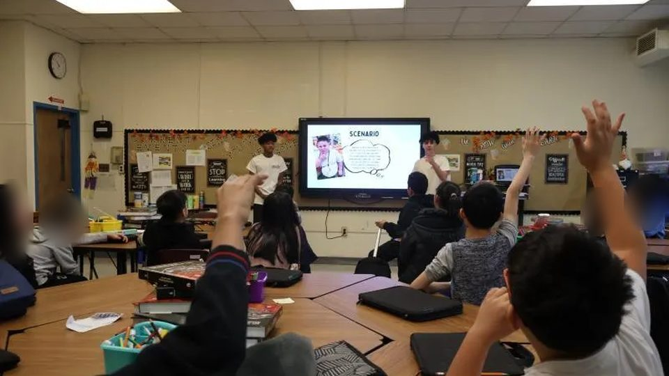
How a Group of High Schoolers Built One of America’s Most Active Youth Financial Literacy Nonprofits -
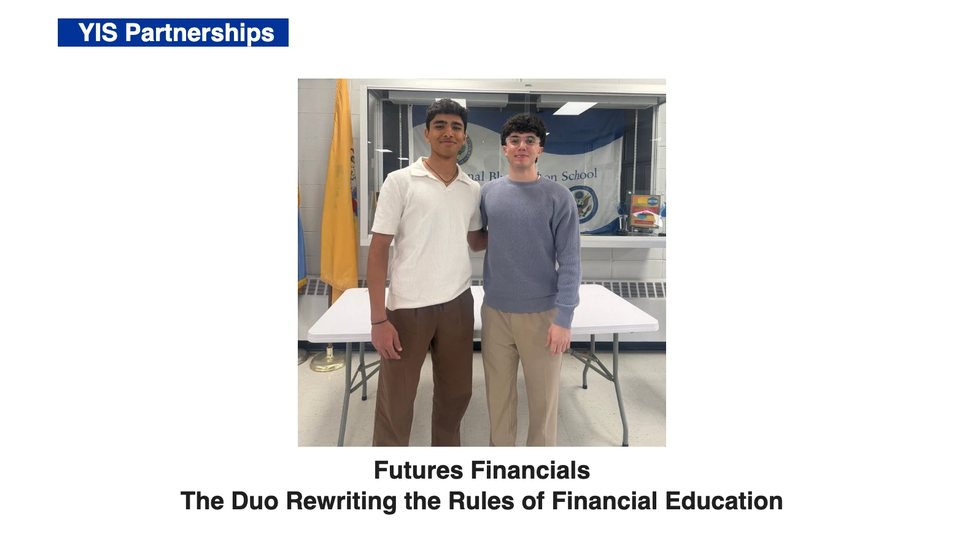
The Duo Rewriting the Rules of Financial Education -
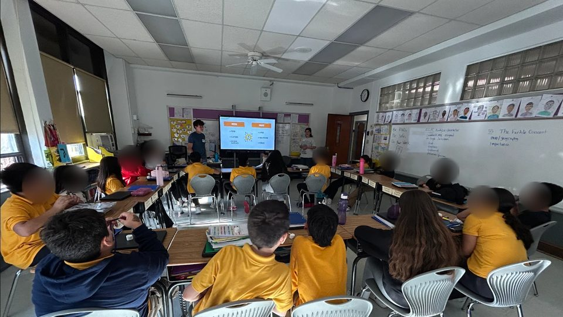
Danny and Hans Are Changing the Face of Financial Literacy Education Around the World -
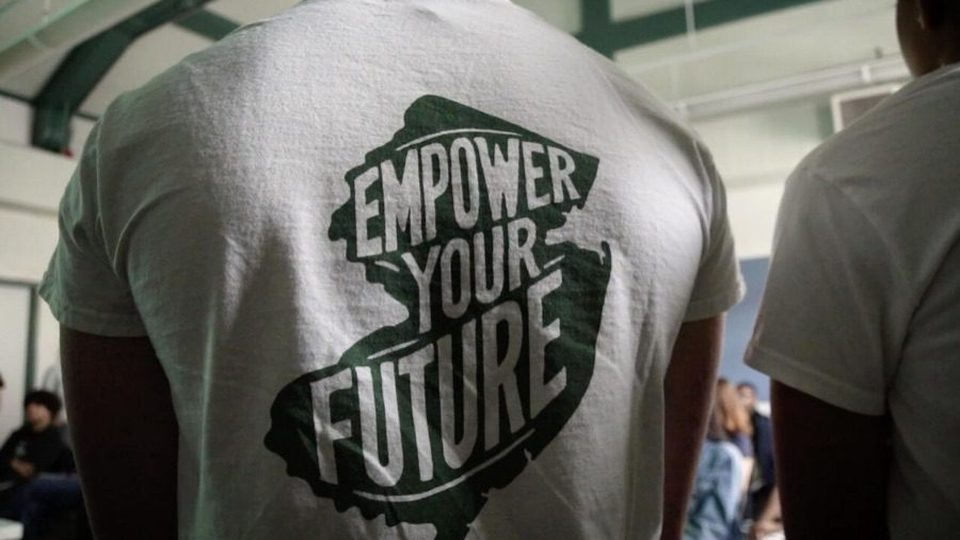
North Jersey teen wins award for his workshop to teach money awareness to other students -
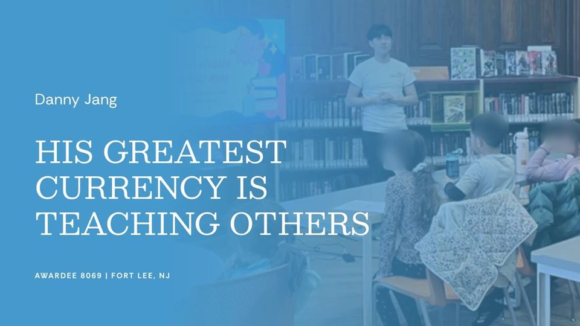
His Greatest Currency Is Teaching Others -
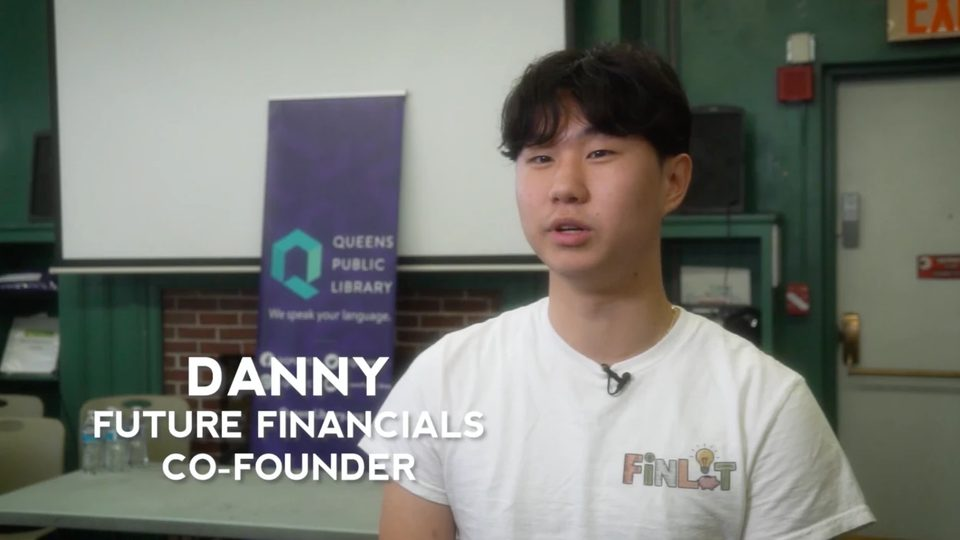
Queens Teen Financial Literacy - Projekt NYC x Futures Financials
-
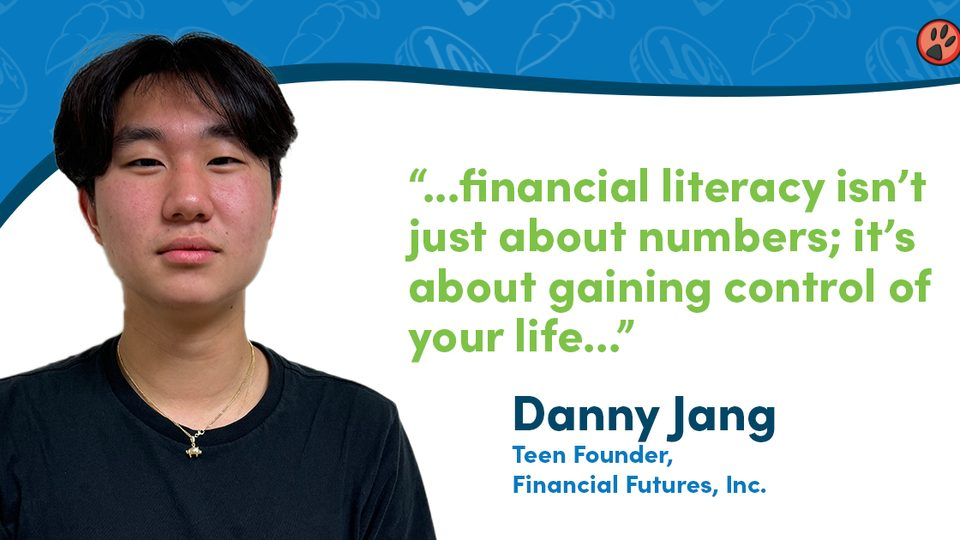
Teen Founder Shares: Why Financial Literacy Is Important to Me -
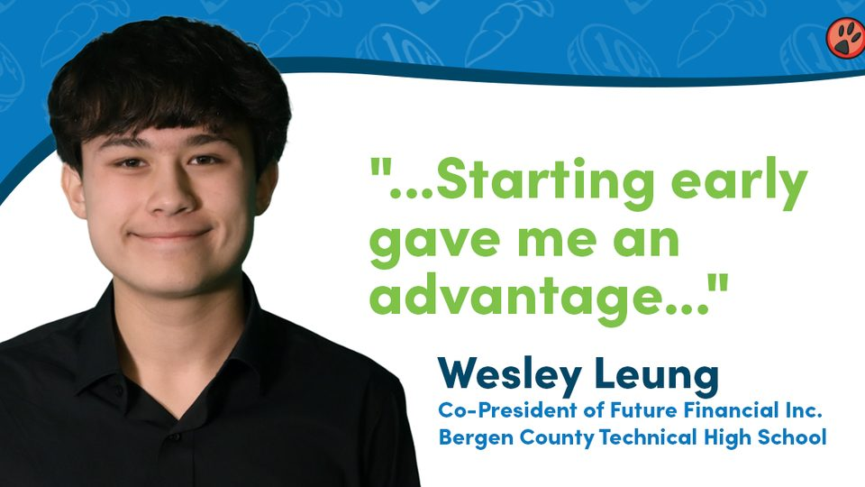
Build Financial Skills from a Young Age, Says High School Club President - Queens Teen Financial Literacy Kick-Off Event
- Everyday Young Hero: Danny Jang
- What Middle Schools Aren't Teaching Kids About Money (And Why It Matters)
-
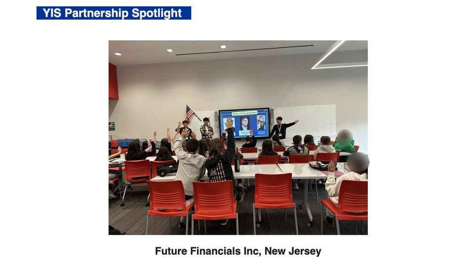
YIS Partnership Spotlight: Futures Financials Inc., New Jersey -
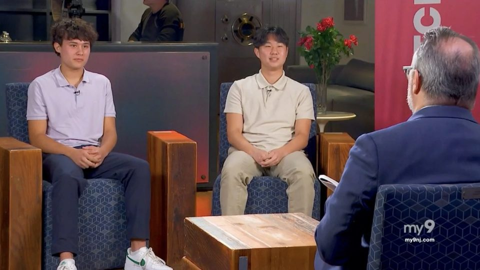
NJ Now: Young Innovators -
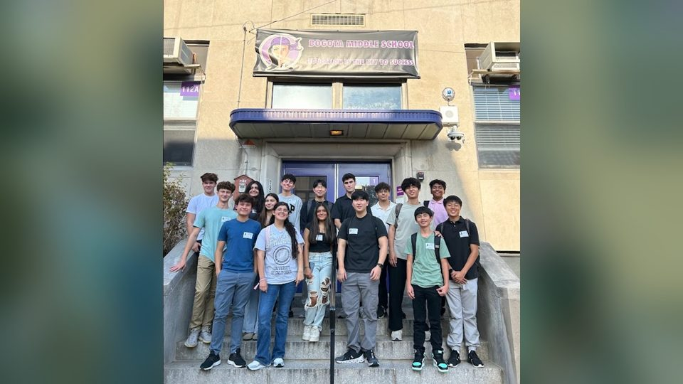
Student Spotlight: New Jersey High Schoolers Lead Teen Teach-In Initiative